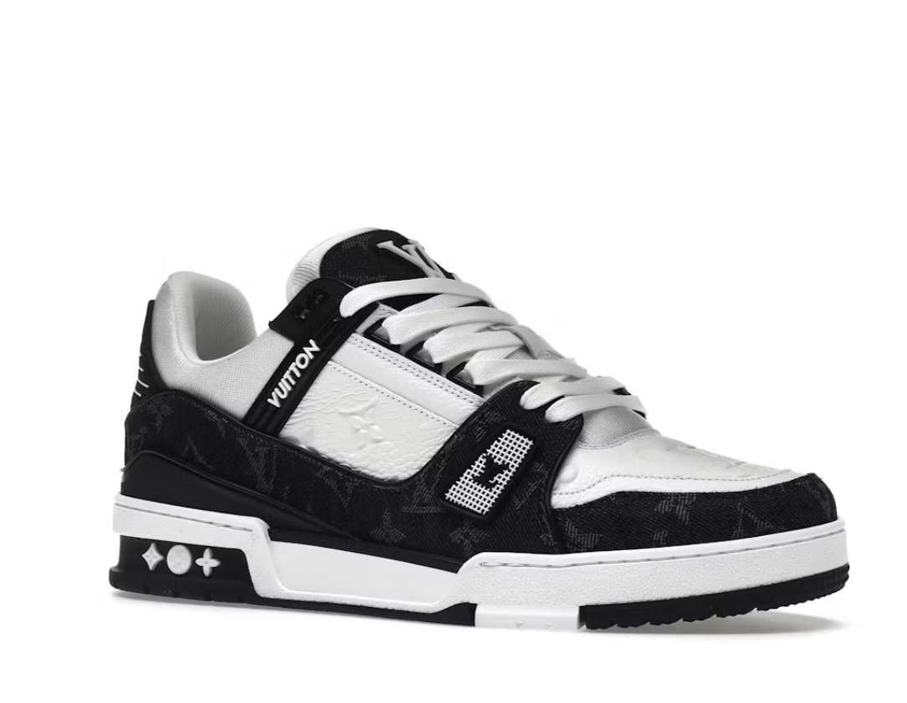
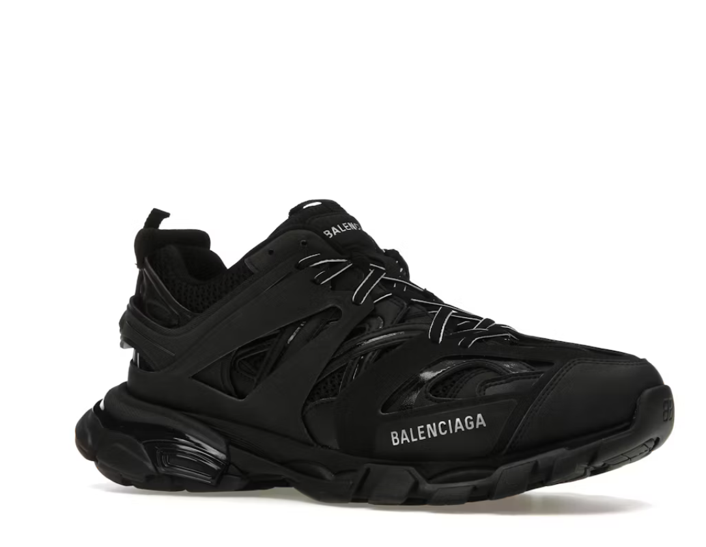
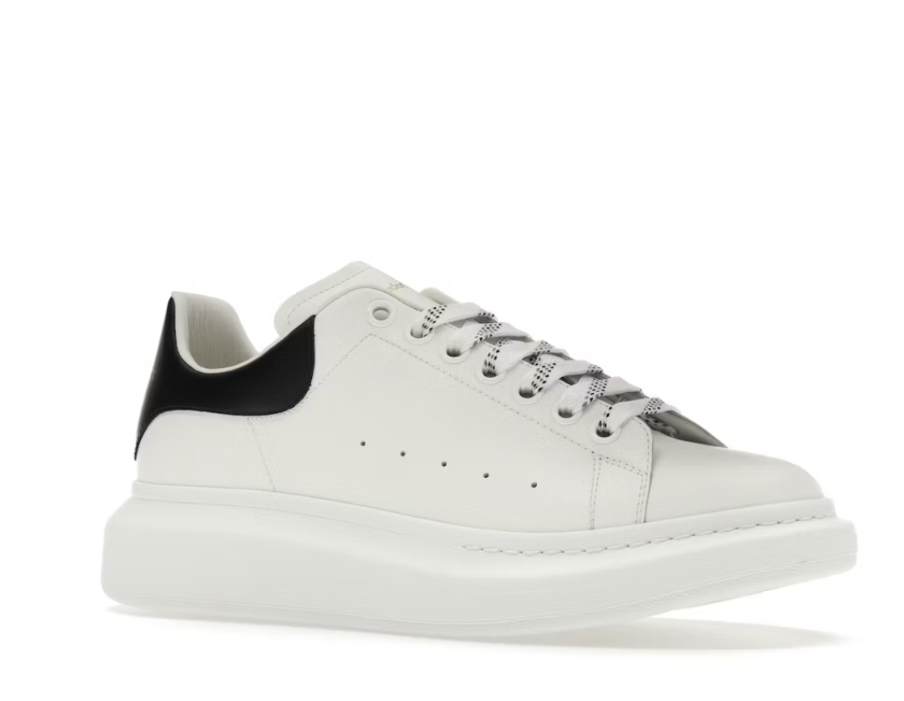
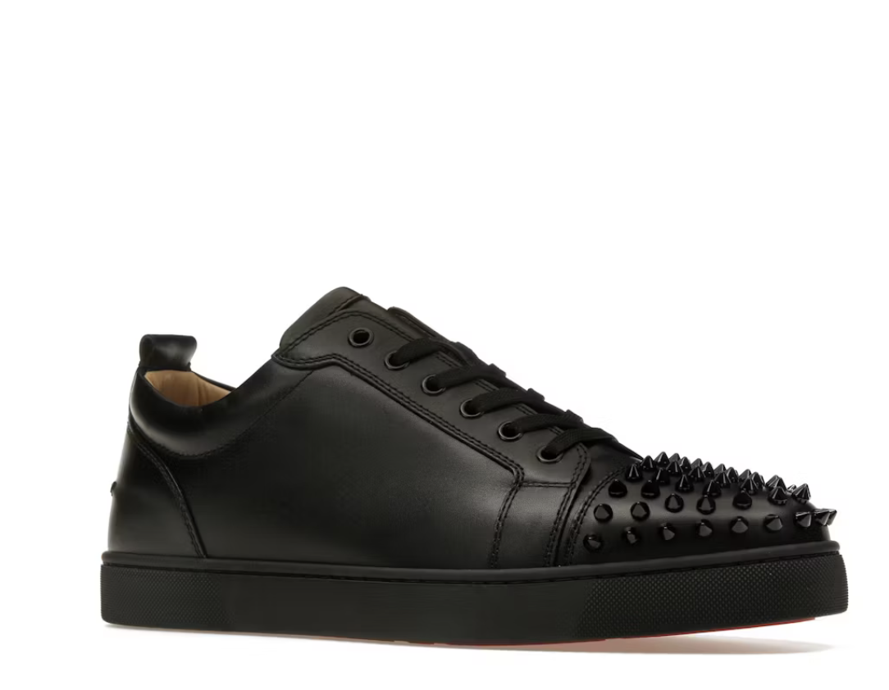

A néhai Virgil Abloh által tervezett LV Trainer a luxus divatház abszolút legsikeresebb lábbelijévé vált, amely a vintage kosárlabdacipők formavilágát ötvözi a prémium francia eleganciával. Minden egyes darab Olaszországban készül, és több mint hét órányi aprólékos kézi munkát igényel a bonyolult varrások és a finom borjúbőr panelek összeillesztése miatt. Az oldalán elhelyezett kézzel írt Louis Vuitton felirat és a sarkakon lévő ikonikus monogram minták miatt a luxus streetwear kedvelőinek egyik legfőbb alapdarabja.
Demna Gvasalia kreatív igazgató vezetése alatt a Balenciaga teljesen átírta a modern cipődizájn szabályait. A Track modell a túracipők és a futócipők elemeit mossa össze egy elképesztően komplex, többrétegű nejlon és hálós (mesh) felsőrésszel. A cipő legmeghökkentőbb részlete a dupla fűzőrendszer, valamint a lábujjrésznél kívülre hímzett cipőméret, ami a márka védjegyévé vált. A vaskos, panelekből álló talpszerkezet nemcsak futurisztikus megjelenést, de komoly stabilitást és kényelmet is biztosít.


Az Alexander McQueen divatház "Oversized" modellje a minimalista dizájn és a drámai formák tökéletes egyensúlya, ami évekre meghatározta a prémium cipőpiacot. A klasszikus, letisztult teniszcipők sziluettjét gondolták újra egy jellegzetes, vaskos és megemelt gumitalppal, ami azonnal felismerhetővé teszi a lépőt. A sima fehér olasz bőr felsőrészt a sarokrészen elhelyezett kontrasztos hasított bőr vagy selyem panel töri meg, amin diszkréten bújik meg az arany színű márkajelzés.
Christian Louboutin nevéről a legtöbb embernek a magassarkúak ugranak be, de a férfi luxus sneaker piacon is maradandót alkotott a Junior Spikes modellel. A cipő a klasszikus alacsony szárú formavilágot vegyíti a rockos és extravagáns stílussal, köszönhetően a lábujjrésznél elhelyezett fém szegecseknek (spikes). A sneaker igazi különlegessége azonban a talpán található, hiszen a márka abszolút védjegyének számító, tűzpirosra lakkozott talpszerkezet minden egyes lépésnél megvillan, hirdetve a luxust.

| Modell neve | Színállás (Colorway) | Eredeti megjelenés | Stíluskód (SKU) | Eredeti ár (Retail) |
|---|---|---|---|---|
| Louis Vuitton Trainer | White Black | 2019 | 1A9JG9 | ~440 000 Ft ($1320) |
| Balenciaga Track | Black | 2018 | 542023W1GB11000 | ~370 000 Ft ($1100) |
| Alexander McQueen Oversized | White Black | 2015 | 553680WHGP79061 | ~210 000 Ft ($620) |
| Christian Louboutin Junior Spikes Flat | White/White | 2016 | 1130573WH01 | ~320 000 Ft ($945) |